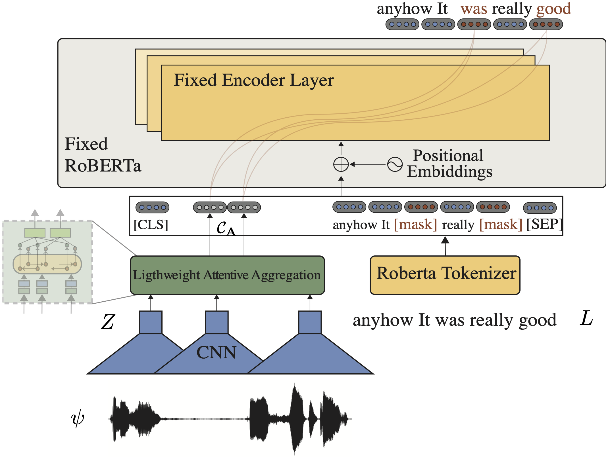

TEASEL: a Transformer-Based Speech-Prefixed Language Model
 |
Abstract
Multimodal language analysis is a burgeoning field of NLP that aims to simultaneously model a speaker's words, acoustical annotations, and facial expressions. In this area, lexicon features usually outperform other modalities because they are pre-trained on large corpora via Transformer-based models. Despite their strong performance, training a new self-supervised learning (SSL) Transformer on any modality is not usually attainable due to insufficient data, which is the case in multimodal language learning. This work proposes a Transformer-Based Speech-Prefixed Language Model called TEASEL to approach the mentioned constraints without training a complete Transformer model. teasel model includes speech modality as a dynamic prefix besides the textual modality compared to a conventional language model. This method exploits a conventional pre-trained language model as a cross-modal Transformer model. We evaluated TEASEL for the multimodal sentiment analysis task defined by CMU-MOSI dataset. Extensive experiments show that our model outperforms unimodal baseline language models by 4% and outperforms the current state-of-the-art (SoTA) model by 1% in F1-score. Additionally, our proposed method is 72% smaller than the SoTA model.
|  |
Citation
@article{arjmand2021teasel, title={TEASEL: A Transformer-Based Speech-Prefixed Language Model}, author={Arjmand, Mehdi and Dousti, Mohammad Javad and Moradi, Hadi}, journal={arXiv preprint arXiv:2109.05522}, year={2021} }